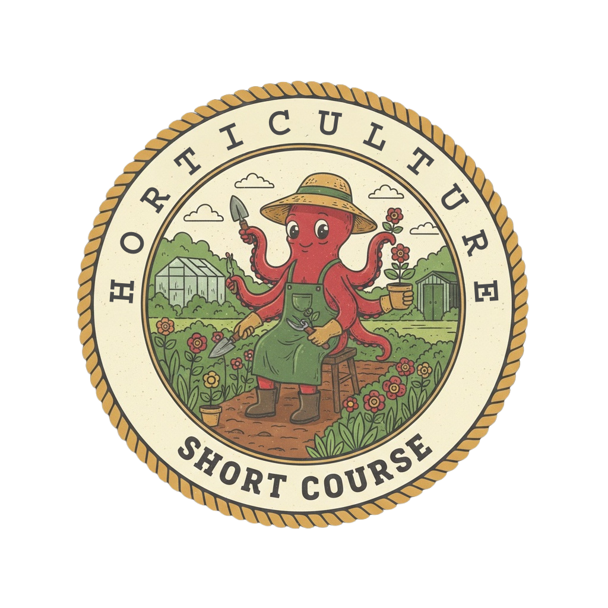
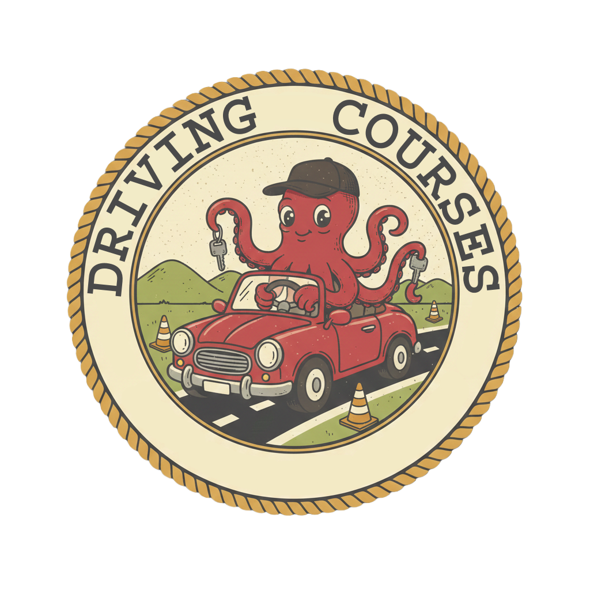
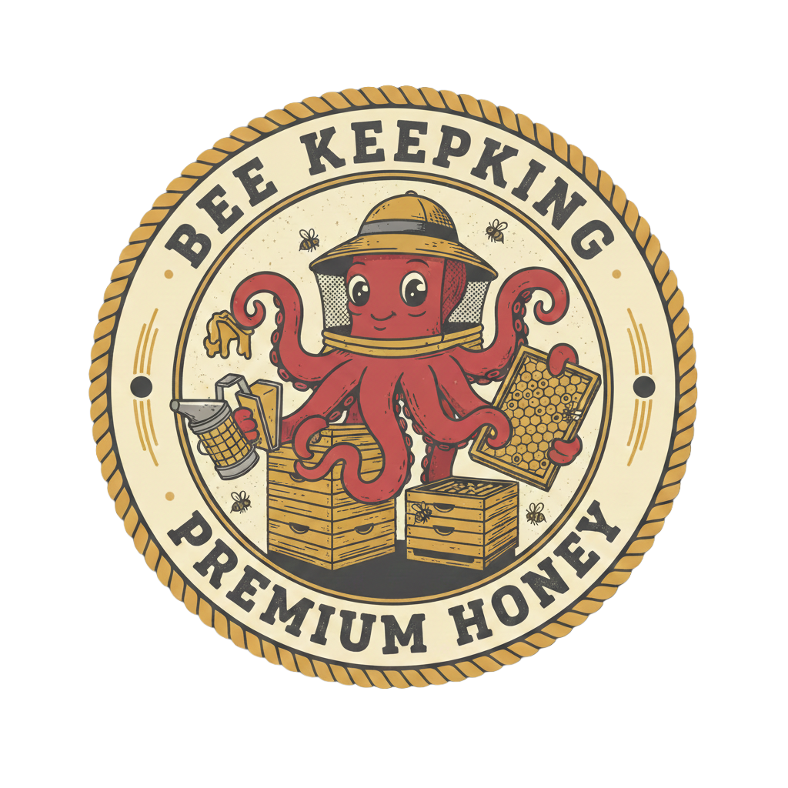
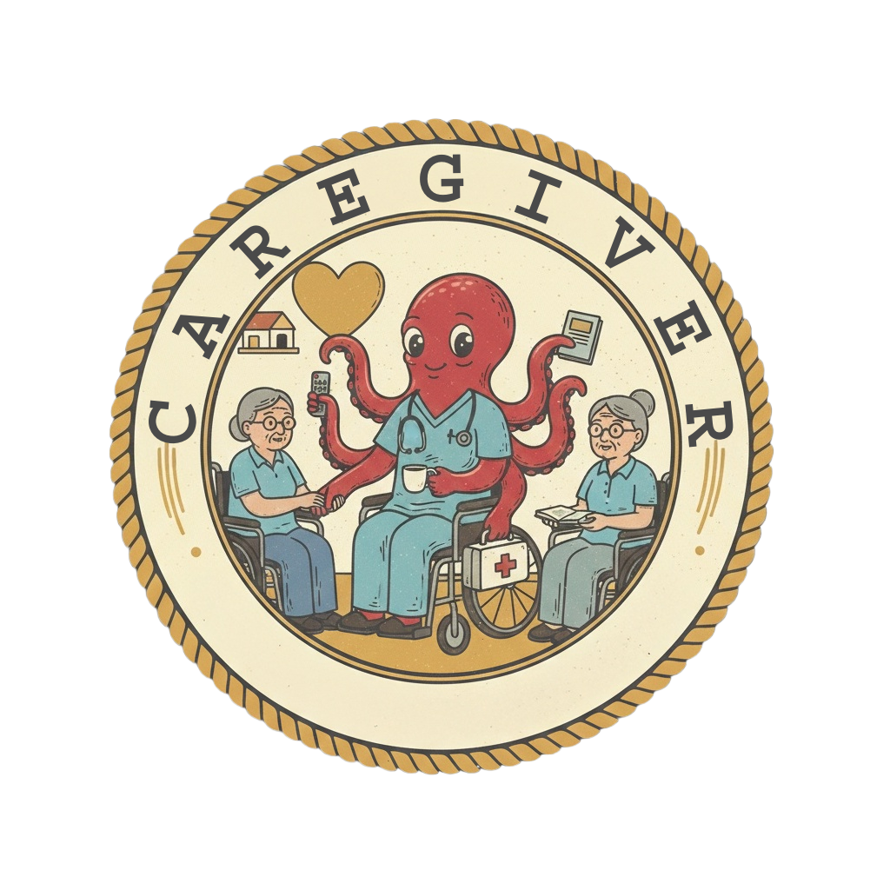
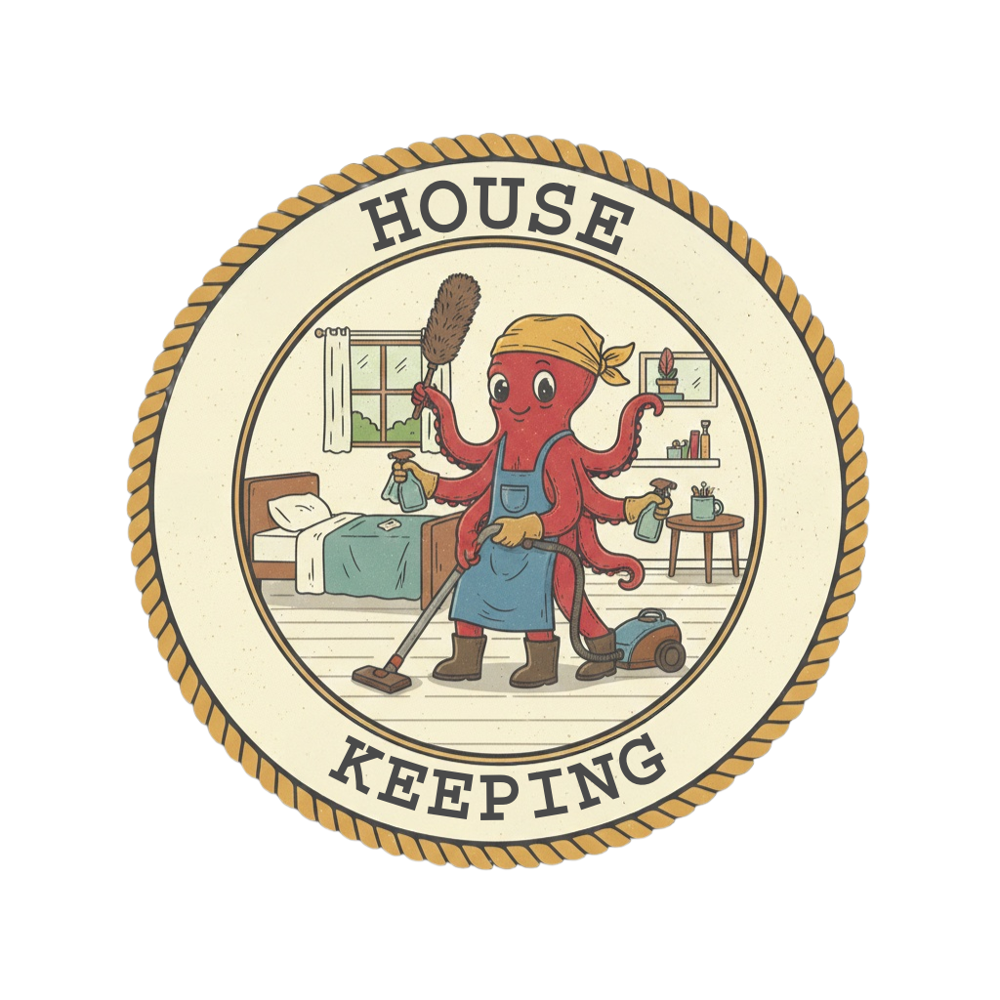
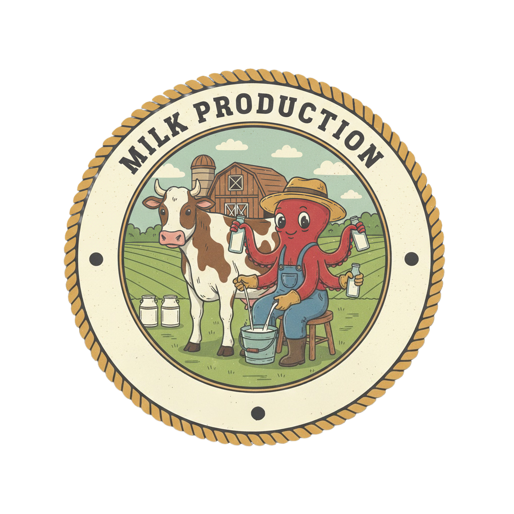
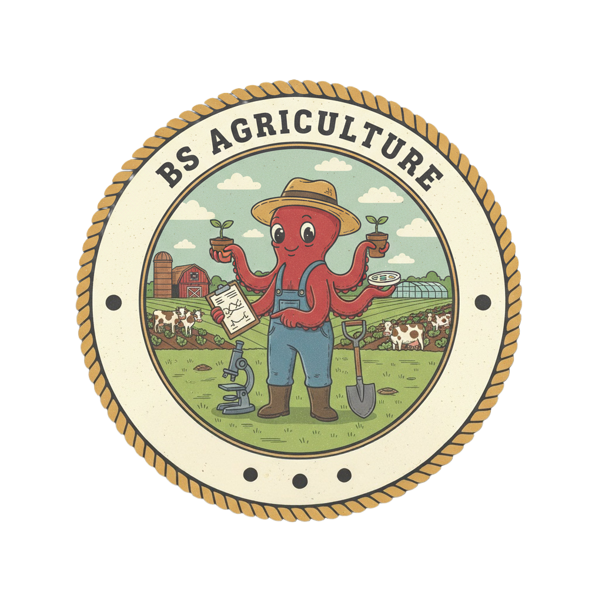

Razo Institute Of Technology and Agricultural Training Center Inc.

Horticulture Short Course
SOON

Driving Courses
A driving course outlines theoretical knowledge (traffic laws, road signs) and practical skills (vehicle handling, defensive driving)
needed to operate a vehicle safely, often divided into mandatory Theoretical Driving Courses (TDC) and Practical Driving Courses (PDC)
leading to licensing. Courses equip individuals with attitudes, knowledge, and abilities to meet industry and regulatory standards.
Hours of training:

Bee Keeping
SOON

Caregiver
SOON

House Keeping
SOON

Milk Production
ONGOING

BS Agriculture
SOON